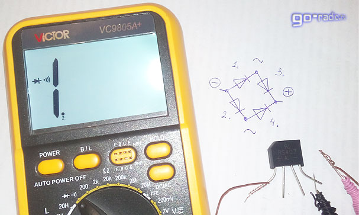

Поскольку в электронике всё чаще применяются диодные мосты в одном корпусе, то встаёт вопрос о методике их проверки. Мне частенько задают вопрос: «Как проверить диодный мост?».
О проверке обычных диодов я уже рассказывал, но тему проверки диодных сборок как-то упустил из виду. Заполним этот пробел.
Для начала вспомним основные свойства диода и схему диодного моста (так называемую схему Гретца).
Как известно, диод пропускает ток только в одном направлении – это его основное свойство. Схема диодного моста по схеме Гретца приведена на рисунке.
К выводам со значком "~" подводится переменное напряжение, полярность подключения тут не важна. Проще говоря, два вывода "~", это вход переменного напряжения.
С выводов «+» и «-» снимается уже постоянное напряжение. На самом деле оно пульсирующее, но сейчас не об этом.
Иногда выводы для подключения переменного напряжения (~) маркируются также AC, что означает Alternating Current – в переводе с английского «переменный ток».
Итак, память освежили, теперь подумаем о том, как же нам проверить диодный мост мультиметром.
Для экспериментов возьмём диодную сборку RS407 на прямой ток 4 ампера и обратное напряжение 1000 вольт. Также нам потребуется любой цифровой мультиметр.
Включаем мультиметр в режим проверки диода. Обычно он совмещён с режимом "прозвонки" и обозначен на панели прибора символом диода.
Чтобы было более наглядно, нарисуем схему диодного моста на бумаге и будем ориентироваться на рисунок. Далее проверим диоды, которые на рисунке обозначены под номером 1 и 2. Для этого подключаем к минусовому выводу диодного моста плюсовой щуп мультиметра (красный). А минусовой щуп (чёрный) подключаем к выводам моста со значком "~" или аббревиатурой AC. Так как диода два, то проделываем эту операцию по очереди.
Так как в таком случае диоды будут включены в прямом (проводящем) направлении, то на дисплее мультиметра мы увидим числа вроде 0,562V (562 mV). Это падение напряжения на P-N переходе открытого диода. Его ещё называют пороговым, т.е. чтобы открыть диод, нужно превысить данное напряжение. В зарубежных даташитах этот параметр называется Forward Voltage или Forward Voltage Drop (сокращённо Vf), что в вольном переводе означает "падение напряжения в прямом включении".
Для кремниевых диодов пороговое напряжение (Vf) составляет 400...1000 mV.
Теперь подключаем чёрный щуп к другому выводу моста со значком "~" или сокращением AC. Результат должен быть аналогичный. Вот взгляните.
Как видим, этот диод также проводит ток в прямом включении, а величина порогового напряжения чуть-чуть отличается (566 mV), это нормально.
Чтобы 100% удостовериться в исправности диодов 1 и 2, проверим их при обратном включении. Для этого к минусовому выводу моста ("-") подключаем минусовой, чёрный щуп мультиметра, а красный плюсовой щуп поочерёдно подключаем к выводам, обозначенным символом "~".
Проверка одного диода...
...второго.
В обоих случаях на дисплее будет отображаться единица, что свидетельствует о высоком сопротивлении P-N перехода. В таком включении диоды ток не пропускают. Они исправны.
Итак, диоды под номером 1 и 2 мы проверили и убедились в том, что они пропускают ток в одном направлении.
Теперь проверяем другую часть моста - диоды 3 и 4. Для этого к плюсовому выводу моста подключаем минусовой щуп мультиметра и по очереди соединяем красный щуп мультиметра с выводами AC диодной сборки. Это будет проверка диодов при прямом включении.
Как видим, диоды 3 и 4 исправны. Для большей уверенности меняем щупы и проверяем их при обратном включении, аналогично тому, как это делали с диодами 1 и 2. В обоих случаях на дисплее должна быть единица.
Многим такая методика проверки может показаться сложной и нудной. Да, я бы назвал такую проверку "дотошной", но она очень эффективна, так как мы проверяем все диоды сборки по отдельности.
Быстрая проверка диодного моста.
Есть и более быстрый вариант проверки диодного моста. На рисунке, что на фото, видно, что диоды 1 и 3 включены последовательно. Значит можно проверить их сразу. Вот так.
Подключаем к минусовому выводу моста плюсовой щуп мультиметра, а к плюсовому - минусовой щуп. На дисплее должно отобразиться что-то вроде этого.
Так как диоды 1 и 3 включены последовательно, то пороговые напряжения переходов будут складываться. В данном случае оно равно 1,045V. Но не будем спешить! Диоды 2 и 4 тоже включены последовательно и в прямом включении. Мало того, они соединены параллельно последовательной ветке из диодов 1 и 3. А это значит, что измерительный ток разделится и также потечёт и через эту ветку. Таким образом, мы проверяем сразу все 4 диода. Если хотя бы один из диодов будет пробит, то мы уже получим на дисплее не значение около 1 вольта, а минимум в два раза меньше, около 0,5V. В дальнейшем мы в этом убедимся, а пока поменяем щупы местами и проверим диоды в обратном включении.
Как видим, прибор показывает единицу – сопротивление диодов велико.

А теперь возьмём заведомо неисправный диодный мост. У меня в наличии оказался диодный мост с маркировкой KBL06. Один из его диодов пробит. Проводим быструю проверку.
Как видим на фото, пороговое напряжение двух последовательно включенных диодов равно 554 милливольтам (554 mV). В таком случае, величина порогового напряжения на одном диоде будет равно около 277 mV, что для кремниевых диодов маловато. А теперь внимание! Перекинем плюсовой щуп на соседние выводы AC диодного моста. На одном из них прибор покажет нулевое сопротивление, и прибор противно запищит! Мы нашли пробитый диод внутри диодной сборки.
Меняем щупы мультиметра местами, чтобы проверить диод в обратном включении. Напомню, что в обратном включении диод ток не пропускает, он закрыт.
На дисплее тоже, что и раньше. Сопротивление P-N перехода диода равно 0. Мы убедились в том, что один из диодов (3 или 4) сборки пробит. Такой мост нельзя применять, он неисправен.
Как видим, диодный мост можно проверить и быстро, но это не факт, что он окажется исправен. Представьте ситуацию, когда будут пробиты диоды 1 и 4. В таком случае при быстрой проверке прибор нам покажет на дисплее значение около 200 mV (для выпрямительных кремниевых диодов). В обратном включении прибор покажет единицу, так как исправные диоды 3 и 4 не пропустят ток в обратном направлении. Закрыв глаза на весьма малое значение в 200 mV, мы допустим ошибку, и сделаем неверный вывод об исправности моста. Поэтому в особо важных случаях желательно проводить полную проверку диодного моста.
Как уже было сказано, наиболее часто диоды выходят из строя по причине пробоя P-N перехода. Но на практике может встретиться другая неисправность диода – обрыв. Обрыв, это когда диод не проводит ток ни в прямом, ни в обратном включении, он является своего рода изолятором. В таком случае, мультиметр при проверке диода в прямом и обратном включении всегда будет отображать единицу (высокое сопротивление).